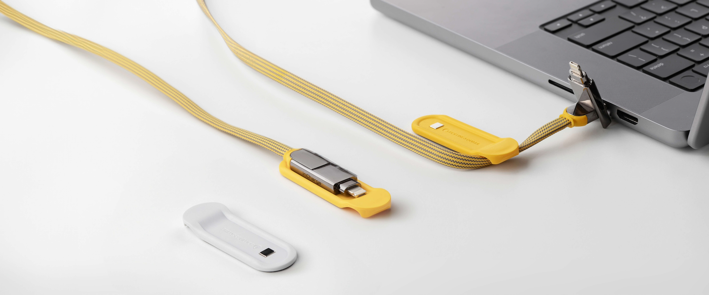

15 Cable Management Hacks for a Cleaner Desk and Lighter Travel Bag (2026)
Most cable management guides treat the symptom, not the cause. This guide starts where the others don't: with cable reduction. Then it covers the 15 best hacks for desk, travel, and standing desk setups — from free DIY tricks to purpose-built solutions.
You have seven cables on your desk and four more in your travel bag. Half of them do the same thing.
That's not an organizational problem. It's a procurement problem — and it's one that most cable management guides never address. The cable management accessories market reached $31.25 billion in 2026 (Mordor Intelligence), yet the top-cited guides still recommend the same velcro ties, cable trays, and binder clips they recommended five years ago. Those tools are useful. But they rearrange the mess; they don't reduce it.
Rolling Square's approach starts differently: reduce cables first, then organize whatever remains. The inCharge XL 6-in-1 cable, for example, handles six connection types from a single braided cable — USB-C, Lightning, Micro-USB, and USB-A in both directions. Our team ran a desk audit and cut the average cable count from 7 to 3 by swapping single-purpose cables for inCharge XLs and pairing them with a single GaN charger. Cable management became dramatically easier once there were fewer cables to manage.
This guide covers 15 hacks spanning desk setup, travel packing, and standing desk configurations — including the cable reduction strategy that no competitor guide addresses, and the specific products that make each hack achievable without a weekend project.
Cable Reduction: The Hack Nobody Talks About
Every cable management article online starts at step two. They assume a fixed number of cables and ask how to route them better. The smarter question is: do you need all those cables?
Start with a cable audit. Unplug everything on your desk. List every cable and adapter. A typical remote worker with a laptop, phone, tablet, and earbuds has: a USB-C to USB-C cable, a Lightning cable, a Micro-USB cable, a USB-A adapter cable, two wall chargers, and a power bank cable. Seven cables — before you've touched the monitor or speakers.
Now identify overlaps. A USB-C cable and a Lightning cable both charge phones. A multi-function cable replaces both — and more. The Rolling Square inCharge XL is a 6-in-1 cable that handles USB-C, Lightning, Micro-USB, and USB-A from a single braided cable. Available in three purpose-built lengths — 1ft (30cm), 6.6ft (2m), and 10ft (3m) — a single inCharge XL eliminates three to four single-purpose cables. The math compounds fast.
| Metric | Before — Typical desk | After — inCharge XL + GaN system |
|---|---|---|
| Cable count | 7 | 1 |
| Adapters needed | 3–4 | 0 |
| Wall chargers | 2+ | 1 (GaN) |
| What's on the desk | USB-C, Lightning, Micro-USB, USB-A cable, charger ×2, power bank cable | inCharge XL, GaN charger, Magnetic desk support |
| Estimated cable weight | ~340g | ~95g |
| Desktop footprint | Sprawling | Compact |
Based on a Rolling Square team desk audit across 5 workstations. Results will vary by device count and cable types.
The goal isn't zero cables — it's minimum viable cables. Going from 7 to 3 is achievable for most people before buying a single cable management accessory. Do this first. It makes every subsequent hack easier.
6-in-1 braided cable handling USB-C, Lightning, Micro-USB, and USB-A. Available in 1ft, 6.6ft, and 10ft. One cable replaces three to four single-purpose cables. Browse the inCharge cable collection →
Desk Cable Management Hacks
1 Start with a Clean Slate
Unplug everything. Do not try to optimize a live desk. Pull every cable, dust the surface, and only reconnect what you genuinely use every day. This single step clarifies the actual problem: most people discover two or three cables they haven't touched in months. Those don't need to be organized — they need to be removed. The best cable organization for an unnecessary cable is a drawer or a bin.
2 Mount Your Power Strip Under the Desk
The most impactful single desk cable upgrade is not a cable — it's a power strip location change. Move your power strip from the floor or desk surface to the underside of the desk using an adhesive mount or a clamp-on under-desk tray. This removes the power strip and all its connected cables from your line of sight and from the floor. Under-desk trays also bundle the excess cable length that pools below the desk — which is the source of most floor-level cable chaos. Most trays mount without drilling and hold up to 5kg.
3 Use Velcro Ties Over Zip Ties
Velcro cable ties outperform zip ties in every practical way for desk use. They're reusable and adjustable — every time you add a device or change a cable, you can open and reclose the bundle in seconds. Zip ties require cutting tools every time you change the setup, and overtightening is easy and irreversible, which damages cable insulation over time. A $10–15 velcro tie kit handles an entire desk. The performance difference between velcro and zip ties is zero; the flexibility difference is enormous.
4 Bundle Cables by Direction
Route cables based on their destination, not their device. Group all cables heading toward the monitor in one bundle. Group all cables heading toward the power strip in another. Separate bundles for opposite directions eliminate the crossing-cable effect that makes desks look perpetually tangled even when they're technically organized. Cable sleeves work best for bundles of three or more. For bundles of one or two, velcro ties at 30cm intervals are sufficient and look cleaner than a sleeve on a thin bundle.
5 Choose the Right Cable Length
The most overlooked cable management mistake is using the wrong cable length. A 6-foot cable run between a desk surface charger and a phone creates three feet of slack that has nowhere to go — that excess becomes the tangle. Measure the actual path between your power source and device before buying, and buy short.
The inCharge XL range comes in three purpose-built lengths precisely for this reason: 1ft (30cm) for desk-surface charging where the phone sits right next to the charger; 6.6ft (2m) for home office setups where the power strip is under the desk; and 10ft (3m) for extended workstations and monitor connections. Picking the right length eliminates excess cable before you need to manage it.

-
Premium silicone travel pouch — Purpose-built to store the cable neatly inside backpacks, tech organizers, or carry-ons. The soft silicone prevents tangling and friction damage, so the cable arrives the same way it left. No loose coils in bags.
-
Magnetic desk support — Anchors the cable in place at the desk edge, preventing it from slipping behind desks, nightstands, or workstations. Works with Hack #6 out of the box — the magnetic holder is already in the package.
6 Use Magnetic Cable Clips on the Desk Edge
Magnetic cable clips mounted on the desk edge keep cable ends accessible when a device is unplugged. Without them, cables slide behind the desk and require fishing back out every time — which trains you to leave devices plugged in indefinitely, creating more clutter. Place clips at the front edge of your desk for the cables you disconnect daily (phone, laptop). If you bought an inCharge XL 6.6ft or 10ft, the magnetic desk support is already in the box — no separate purchase needed.
7 Label Every Cable
In bundles of three or more, unlabeled cables become a guessing game. Color-coded silicone cable ties serve double duty as both labels and ties: assign one color per device and you'll never trace a cable again. Printed cable labels (Dymo, Phomemo) are the premium option for permanent setups. This tip sounds trivial until you have four identical black USB-C cables running from the same under-desk tray and need to unplug just the monitor.
8 Consolidate Chargers with a GaN Charger
A GaN (gallium nitride) charger delivers the same output as two or three conventional chargers from a single compact unit. Most remote workers keep a laptop charger and a phone/tablet charger plugged in permanently. A single 65W GaN charger replaces both and handles a third device simultaneously — eliminating one cable connection point, one power strip socket, and the visual clutter of multiple bulky white bricks.
One of the smallest 65W GaN chargers available, folding flat to roughly the footprint of a large postage stamp. Replaces two conventional chargers — one plug, one cable slot, everything charges. See the Supertiny →
Travel Cable Management Hacks
9 Use a Dedicated Tech Pouch
The single organizing principle for travel cables is containment. A dedicated tech pouch keeps every cable, adapter, and charger in one place — so you never unpack to find a charger and accidentally leave it on the hotel nightstand. Mesh-pocket organizers work best because they make contents visible at a glance; you can identify what you need without emptying the pouch. Size to your actual kit: most people overpack tech pouches with cables they "might" need. After the cable audit in the opening section, your travel kit should contain only verified essentials. A pouch that fits your hand is usually the right size.
10 Replace Travel Cables with Multi-Function Alternatives
Every single-purpose cable in your travel bag is a weight and volume tax that compounds across every trip. A USB-C cable, a Lightning cable, and a Micro-USB cable weigh approximately 130g combined and take up a meaningful portion of a tech pouch. Replace them with one.
The Rolling Square inCharge X is a keyring-sized 6-in-1 cable weighing just 23 grams that attaches directly to your keyring or tech pouch zipper pull. It handles USB-C, Lightning, Micro-USB, and USB-A connections — combining six charging connections in one compact keychain cable. Replacing three cables with one inCharge X removes approximately 110g and three separate items from your bag before you've packed anything else.
inCharge X — The keyring cable that replaces six
23 grams. Attaches to your keyring. Handles USB-C, Lightning, Micro-USB, and USB-A — six charging connections in one pocket-sized cable. Swiss-designed. The last travel cable you need to pack. Available now.
11 Carry an Emergency Power Bank on Your Keyring
Long cable runs from a laptop to a wall outlet turn cafe tables into tripping hazards and limit where you can sit or work. An ultra-compact keyring power bank eliminates the need for outlet proximity for phone top-ups. The Rolling Square TAU keyring power bank clips to keys and provides enough charge to bring a phone from 20% to 60% — covering most travel dead-battery emergencies without connecting to a single wall cable. Fewer outlets needed means fewer cables deployed.
12 Roll, Don't Fold Cables
Folding cables creates kinks at the fold point, weakening the internal conductors over time and causing the fraying you've seen at cable ends. The correct storage method is the over-under roll: alternate the direction of each loop so the cable coils naturally without twisting. A rolled cable stores in half the volume of a folded cable and lasts significantly longer. Silicone ties maintain the roll shape inside a tech pouch. This is one of those habits that pays off over two to three years of daily use.
13 Use Cable Ties Inside Your Travel Pouch
A tech pouch with loose cables becomes tangled within minutes of travel movement. Individual silicone or velcro ties on each rolled cable prevent tangling and make each cable immediately identifiable when you open the pouch. This is the travel equivalent of Hack 7 — one tie color per cable type means you can grab what you need without pulling everything out and untangling a knot on an airport security tray.
Advanced Hacks for Standing Desks and Multi-Monitor Setups
14 Cable Spines for Standing Desks
Standard under-desk cable routes fail on standing desks because the cables travel a different distance at sitting height versus standing height. A cable routed at sitting height becomes taut as the desk rises, pulling at both connection points. The solution is a flexible cable spine — a retractable or accordion-style cable chain that attaches to the desk frame and contracts as the desk rises. Cable spines designed for standing desks typically handle a bundle of 4–8 cables and accommodate the full height adjustment range. Key rule: always leave at least 20% additional slack in the spine beyond what you think you need, to prevent cables from pulling taut at maximum height. Mount the spine to the desk leg, not the desktop, so it moves with the desk.
15 Docking Stations to Reduce Cable Endpoints
A Thunderbolt or USB-C docking station is the most aggressive desk cable reduction possible beyond cable swaps. Instead of individual cables running to your monitor, speakers, ethernet port, and USB hub, a single Thunderbolt 4 cable from laptop to dock handles everything — one cable connection for the entire peripheral stack. The dock handles the rest invisibly.
Paired with a Rolling Square inCharge XL 10ft cable for the laptop-to-dock run, this creates a near-zero-cable desktop: one cable to the dock, one power cable, everything else hidden. The dock + 10ft multi-function cable combination is the closest thing to a truly minimal desk available without going wireless for everything.
Frequently Asked Questions
Standing desks need cable solutions that move with them. Use flexible cable spines or accordion-style cable chains that attach to the desk frame and contract as the desk rises. Always leave at least 20% extra slack in the spine beyond the full height range to prevent cables from pulling taut at maximum height. Avoid rigid cable trays mounted to the desktop itself, as these strain connections during height transitions.
A compact tech pouch combined with multi-function cables is the most effective travel cable solution. A 6-in-1 cable like the Rolling Square inCharge X replaces up to six individual cables at just 23 grams, dramatically reducing what you need to pack and organize. Size your pouch to your actual kit — most people overpack tech pouches with cables they "might" need. Start with a cable audit and only pack what you've verified you'll use.
Yes, especially under-desk trays that hide power strips and excess cable length. They are the single most impactful desk cable upgrade because they remove clutter completely from your line of sight and from the floor. Most mount with adhesive pads or clamps and require no drilling. If you do only one thing from this guide after the cable audit, make it an under-desk power strip mount.
Every 3 to 6 months, or whenever you add or remove a device. A quick cable audit takes under 10 minutes: unplug everything, count what you have, identify duplicates, and only reconnect what you actually use. This prevents clutter from creeping back between major cleanups. Every new device purchase is a trigger to audit — devices usually come with their own cable, which often duplicates something you already have.
Absolutely. Adhesive cable clips, clamp-mounted under-desk trays, and magnetic cable holders all work without any drilling. Most modern cable management products are designed for renters and for those who prefer reversible installations. Velcro ties, adhesive hooks, and clamp-on trays cover 90% of desk cable management needs with zero permanent modifications to furniture or walls.
Key Takeaways
- The most effective cable management starts with cable reduction, not organization — audit first
- A single 6-in-1 cable like the inCharge XL can replace three to four single-purpose cables on your desk
- Under-desk cable trays and velcro ties are the two highest-impact, lowest-cost desk upgrades
- Travel cable management benefits most from multi-function cables and a properly-sized tech pouch
- Standing desks require flexible cable spines that move with the desk height changes — leave 20% extra slack
- GaN chargers eliminate bulky adapters and reduce the number of wall chargers needed to one
- Reorganize your cables every 3 to 6 months, or whenever you add a new device, to prevent clutter returning
Start with the Cables, Not the Organizers
Cable management is not a one-time project — it's an ongoing practice calibrated to your device inventory, which changes. Buying a new monitor or tablet means revisiting your cable setup. The trend in desk and travel kit design is toward fewer, smarter cables rather than more organizers.
The velcro ties and cable trays in this guide work. But they work significantly better when there are only three cables to manage instead of seven. Start with cable reduction. Then organize whatever remains.
Rolling Square inCharge Cable Collection
6-in-1 cables in keyring, pocket, and desk lengths. One cable type, every connection. Swiss-designed, CES Innovation Award winners. The foundation of a minimal cable setup — for desk and travel.
Sources & References
- Mordor Intelligence — Cable Management Market — $31.25B market size 2026, opening context
- BTOD — Top Cable Management Every Price — Price-tier structure, velcro ties validation
- Anker — Cable Management Hacks for a Minimalist Desk — 15-hack format, self-positioning model reference
- Oakwood — Desk Organization in 2026 — Under-desk power strip mounting, FAQ structure
- Small Stuff Counts — Cord Organization Ideas — Cable labeling tip validation
- Pack Hacker — Best Tech Pouch — Tech pouch sizing methodology for travel section
- Work While Walking — Cable Management Chains — Standing desk cable spines reference
- Cable Organizer — Essential Cable Management Tools — Tool category depth reference